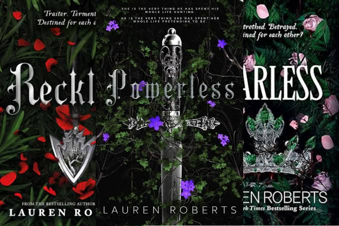
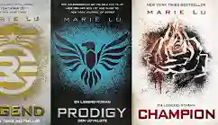
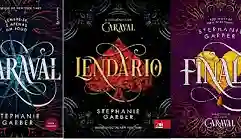
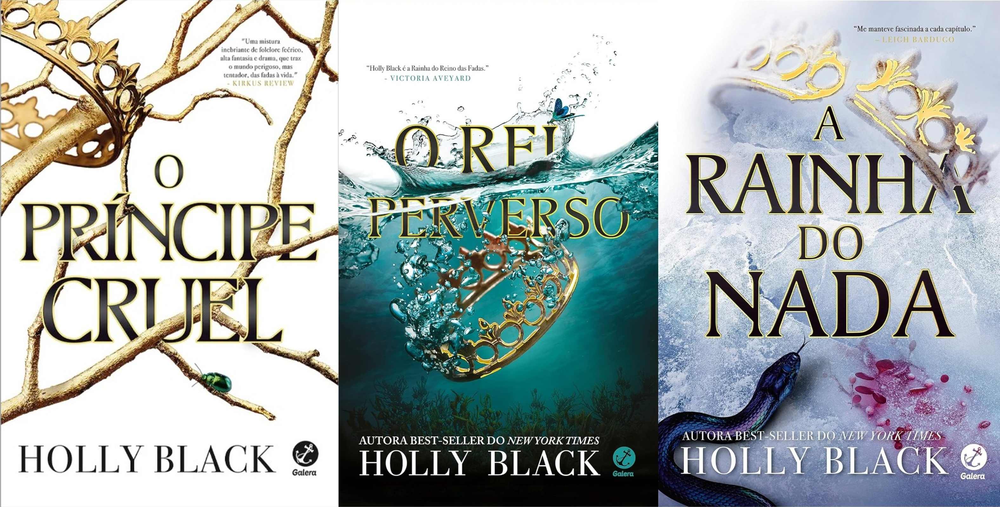

Assistente do Vilão

Evie Sage precisa desesperadamente de um emprego para sustentar sua família e acaba aceitando a vaga de assistente do vilão mais temido do reino. O que ela não esperava era que seu chefe cruel na verdade fosse compreensível, transformando sua rotina em uma mistura caótica de crimes e afeição mútua.
> Resenha no blog: Deixe ser.
Powerless

Em um reino onde os sobreviventes de uma praga ganharam poderes e os comuns são caçados, Paedyn Gray finge ser uma psíquica para sobreviver nas ruas. O destino a une ao príncipe Kai, um executor do reino, iniciando um jogo perigoso de gato e rato onde a atração mútua pode ser fatal para ambos.
> Resenha no blog: Queria estar lendo.
Legend

Em uma Los Angeles distópica e futurista, June é uma prodígio militar de 15 anos nascida na elite, enquanto Day é o criminoso mais procurado do país. Quando o irmão de June é assassinado e Day se torna o principal suspeito, os caminhos dos dois se cruzam em uma caçada que revelará verdades sombrias sobre o governo.
> Rsenha no blog: Livros & Fuxicos
Caraval

Scarlett e sua irmã Donatella vivem sob o controle de um pai cruel em uma ilha isolada, até que recebem o cobiçado convite para o Caraval, um jogo lendário e mágico. Quando Donatella é sequestrada pelo mestre do jogo, Scarlett precisa decifrar as ilusões da performance antes que o tempo acabe e ela perca a irmã para sempre.
> Resenha no blog: Balaio de babados
O Príncipe Cruel

Jude tinha sete anos quando seus pais foram assassinados e ela foi levada com as irmãs para viver na perigosa Alta Corte de Faerie. Para sobreviver aos maus-tratos dos seres mágicos que desprezam os mortais, ela precisa desafiar o cruel príncipe Cardan e se envolver em uma teia mortal de intrigas políticas.
> Resenha no blog: Idris Brasil
Divinos Rivais

Divinos Rivais acompanha Iris e Roman, dois jovens jornalistas rivais em um jornal local que competem por uma promoção. Enquanto enfrentam o cenário de uma guerra brutal entre deuses que assola o mundo, eles se conectam secretamente por meio de cartas mágicas enviadas por suas máquinas de escrever, sem saberem as verdadeiras identidades um do outro.
> Resenha no blog: Nosso mundo literário
O que o rio sabe

O que o rio sabe, acompanha Inez Olivera, uma jovem argentina que viaja ao Egito do século XIX após a misteriosa morte de seus pais. Portando um anel com magia antiga, ela desobedece seu tutor para investigar o caso nas escavações do Cairo. Lá, enfrenta perigos e uma rivalidade com o assistente Whitford, descobrindo segredos e contrabandos de relíquias.
> Resenha no blog: PS Amo Leitura
O experimento do amor

Acompanhamos Mia, uma estudante de jornalismo, iniciando um namoro falso com seu rival de infância, Benjamin, para usar como estudo científico em seu TCC. Ele aceita a farsa para provocar a ex, mas a convivência forçada e as provocações diárias logo saem do controle dos dois.
> Resenha em um perfil do instagram
Amor em campo

Em Amor em Campo, a jornalista Helena e o jogador de futebol Thomas iniciam um namoro falso por conveniência. Porém, o acordo sai do controle nos bastidores do esporte quando a convivência forçada e a pressão da mídia transformam a farsa em uma paixão real e avassaladoramente secreta.
> Resenha em um perfil do instagram